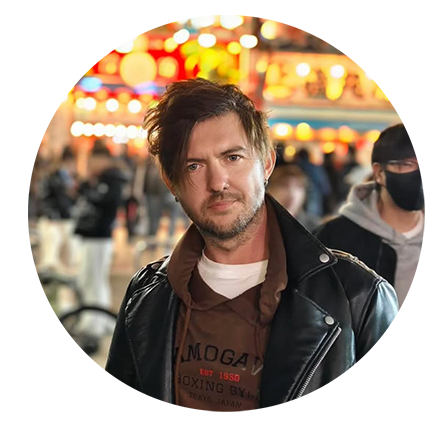
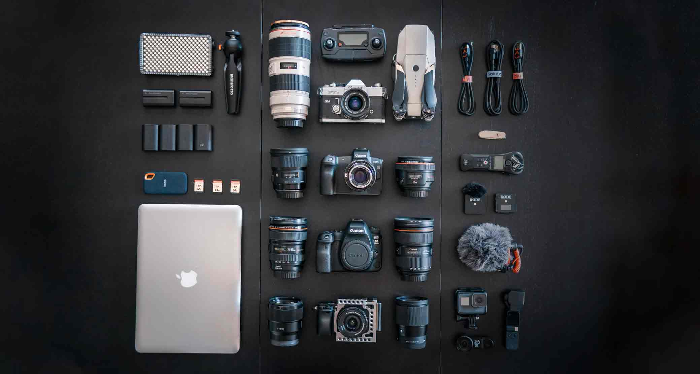

A practical creative path
My name is Carl Tomich. I’m an Australian filmmaker and YouTuber, and this site is mostly a long, messy record of me trying to build a life that feels more intentional and more honest than the one I was drifting into back home.
I didn’t grow up with some big dream of becoming a travel YouTuber or a digital nomad. I just always liked making things. Music first, then video, then photography. In my twenties I moved to Berlin, busked on the streets with a guitar, filmed music videos, scraped by doing creative work, and lived a very unstable but very alive kind of life. It was chaotic and impractical, but I felt more like myself then than I ever did later on when my life became sensible.
Eventually I moved back to Australia and did what you’re supposed to do. I got a normal job. I paid rent. I built routines. On paper my life was fine. In reality it slowly started to feel smaller and more repetitive every year. It wasn’t because I hated Australia. I think I had just outlived it. I’d seen everything, done everything, and all the things I liked about it over the years slowly started to change. Rules came in. Red tape came in. A lot of the fun got regulated out of everything. My favourite bars started closing. The live music scene got worse. Everything got more expensive. Traffic got worse. Rent went up. The quality of life started to feel stale and boring in a way I couldn’t really explain properly to other people.
Around the same time I started taking filmmaking seriously again. I bought a camera. I started a YouTube channel. I started filming travel, daily life, and my own attempts to build online income streams. Stock footage. YouTube ad revenue. Affiliate links. Freelance editing. None of it was glamorous. Most of it barely worked at first. But for the first time in years I felt like I was actually building something instead of just maintaining a life I didn’t really want anymore.
In my late thirties I made the decision to leave Australia again. Not because I thought moving overseas would magically fix my life, but because I couldn’t ignore the feeling anymore that if I didn’t try something different now, I probably never would. I moved to Vietnam and ended up staying for a while.
These days my life is a bit more fluid. I’ve been based in Vietnam, mostly in Hanoi, but I’m about to leave again and head to Europe. Albania first, then Montenegro, then Croatia. I don’t really feel like I’m “moving” to any of these places in a permanent way. It’s more that I’m still trying to work out where I actually belong, or at least where I feel most like myself. Every place changes you a little bit, and I think I’m still in the phase of my life where I need to see what’s out there properly before I lock myself into another country and call it home.
My day-to-day life looks roughly the same wherever I am. I train. I edit videos in cafés or apartments. I film whatever city I’m in. I write travel guides based on places I’ve actually spent real time in. I review gear I actually use to make a living. I upload stock footage and hope it sells.
Some months I make decent money. Some months I don’t. I’m not rich. I’m not broke. I’m not financially free. I’m just trying to build something that gives me a bit more control over my time and a bit more say in what my life actually looks like from one year to the next.
A lot of my content ends up being about travel, but that’s not really what I’m interested in at a deeper level. I’m more interested in what happens to people when they leave their old life behind and realise nobody is coming to tell them what to do anymore. The loneliness. The discipline problems. The money anxiety. The identity crisis. The weird mix of freedom and responsibility that comes with trying to design your own life.
I don’t sell courses. I don’t promise freedom. I don’t think travel fixes your problems. It just changes the background they happen against.
This site exists mostly as a public record of me trying to build a life that feels honest and creative and sustainable without lying to myself or anyone else about how messy and uncertain that process actually is.
If you’re here because you’re looking for perfect travel tips or a blueprint for escaping your job, you’re probably going to be disappointed. If you’re here because something in your own life feels a bit off and you’re trying to figure out what to do about it, then you might find some of this useful.
At the very least, you’ll get honest travel guides, honest gear reviews, and honest writing from someone who’s still very much in the middle of figuring his own life out.
Ways I Work With People
Video Production & Cinematography
Planning, shooting, and directing narrative or brand-driven films with a documentary-first eye.
Editing & Post-Production
Full edit workflows, sound polish, and story structure for long-form and short-form content.
Content Strategy & Distribution
Practical rollout plans for YouTube and online media, built around sustainable publishing.
Collaborations
Selective creative partnerships where the story has depth, clarity, and long-term value.
YouTube Channels
Three channels, each built for a different kind of viewer and story.

Carl Tomich
Personal documentaries and reflective commentary on travel, creativity, and work.
Visit ChannelGlobe Travel Adventures
Evergreen travel guides and practical destination content for real trips.
Visit Channel
Carl Tomich Tech Reviews
Real-world gear and workflow reviews from a working filmmaker.
Visit ChannelAvailable for Work Worldwide
Video Production
I'm available for hire worldwide for professional video production work. With over a decade of experience behind the camera, I specialize in creating compelling visual stories across multiple formats.
-
Documentaries — Long-form storytelling, observational filmmaking, and narrative-driven projects
-
Commercials — Brand storytelling, product videos, and promotional content
-
Music Videos — Creative concepts, performance videos, and narrative-driven music films
-
Weddings — Cinematic wedding films that capture authentic moments and emotions
-
Events — Corporate events, conferences, and special occasions
YouTube Mentoring
Beyond production work, I offer one-on-one mentoring for content creators looking to grow their YouTube channels, improve their filmmaking skills, or build a sustainable creative career.
-
Channel Strategy — Content planning, audience growth, and monetization strategies
-
Filmmaking Skills — Camera work, editing, color grading, and cinematic techniques
-
Content Creation — Storytelling, scripting, and building a sustainable content workflow
-
Technical Setup — Gear recommendations, workflow optimization, and production efficiency
Based in Asia — Currently working across Vietnam, Thailand, and Southeast Asia, but available for projects worldwide.
Let’s talk about your project
If you’re a brand, filmmaker, or collaborator with a serious idea, I’m happy to hear it. Tell me what you’re building and how I can help.